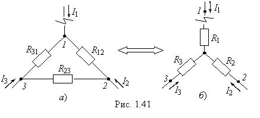
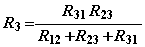
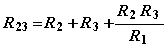

звезды в треугольник
Треугольником называют соединение трёх элементов,
в котором конец первого элемента соединён с началом второго, конец второго с началом третьего, а конец третьего с началом первого (рис. 1.41а). Звездой называют соединение, в котором концы трёх элементов соединены в одну общую точку п (рис. 1.41б).

Эквивалентность преобразования
треугольника в звезду проявляется в том, что токи I1, I2 и I3 в ветвях, примыкающих как к
треугольнику, так и к звезде, и напряжения U12, U23 и U31 между узлами 1 и 2, 2
и 3, 3 и 1 должны остаться одинаковыми, или изменяться
одинаково для всех режимов работы обеих схем, в том числе при обрыве одного из
проводов, например, подходящего к узлу 1.
При этом изменившийся ток I2, подходящий к треугольнику, должен
быть равен подходящему к звезде току I2, а ток I3 луча звезды − равен току I3, подходящему к треугольнику, что
возможно только при равенстве сопротивлений участков между узлами 2 и 3
треугольника и звезды, т. е.

Записав аналогичные уравнения при
обрыве проводов, подходящих к узлам 2 и 3,
и решив систему уравнений (например, вычитая из второго уравнения первое и суммируя результат с третьим уравнением и т. д.), получим:
 (1.40)
т.е. сопротивление луча эквивалентной звезды равно дроби, в числителе которой произведение двух сопротивлений сторон треугольника,
примыкающих к рассматриваемому узлу, делённому на сумму всех сопротивлений
сторон треугольника.
Если известны сопротивления сторон симметричного треугольника, равные R12 = R23 = R31 = RΔ, то сопротивления лучей звезды одинаковые, равные R1 = R2 = R3 = RY = RΔ / 3.
В расчётах иногда возникает
необходимость замены звезды в эквивалентный треугольник. Необходимые соотношения
получим из уравнений (1.40), поделив, например, первое уравнение на второе,
первое на третье и т. д. и решив их совместно:
 (1.41)
т.е. сопротивление стороны треугольника равно сумме сопротивлений лучей звезды, примыкающих к рассматриваемым двум узлам, плюс произведение сопротивлений этих лучей звезды, делённое на сопротивление третьего луча звезды.
Если сопротивления лучей звезды то сопротивление каждой из сторон треугольника
R12 = R23
= R31 = RΔ = 3RY .